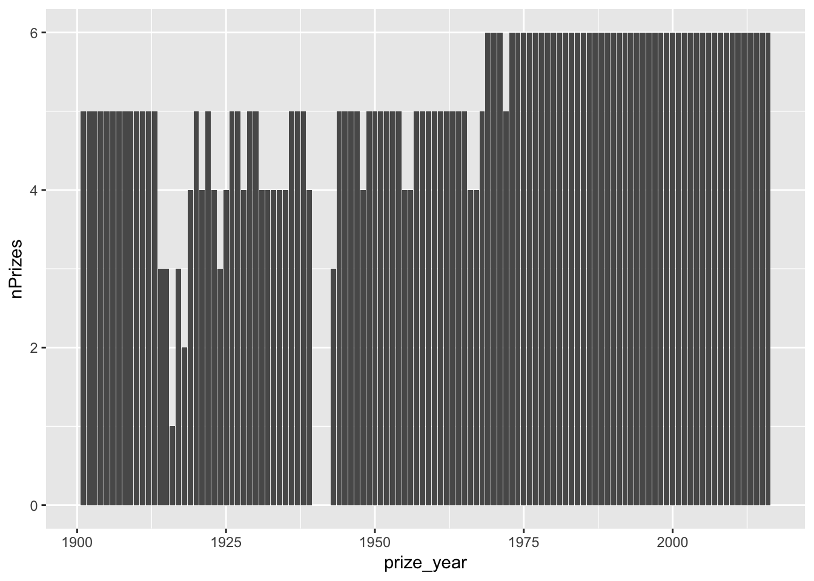

TidyTuesday 14th May 2019
@dataknut
Last run at: 2019-05-14 16:42:00
1 Load data
and inspect it…
nbwdt <- data.table::as.data.table(readr::read_csv("https://raw.githubusercontent.com/rfordatascience/tidytuesday/master/data/2019/2019-05-14/nobel_winners.csv"))## Parsed with column specification:
## cols(
## prize_year = col_double(),
## category = col_character(),
## prize = col_character(),
## motivation = col_character(),
## prize_share = col_character(),
## laureate_id = col_double(),
## laureate_type = col_character(),
## full_name = col_character(),
## birth_date = col_date(format = ""),
## birth_city = col_character(),
## birth_country = col_character(),
## gender = col_character(),
## organization_name = col_character(),
## organization_city = col_character(),
## organization_country = col_character(),
## death_date = col_date(format = ""),
## death_city = col_character(),
## death_country = col_character()
## )# skim it
skimr::skim(nbwdt)## Skim summary statistics
## n obs: 969
## n variables: 18
##
## ── Variable type:character ──────────────────────────────────────────────────────────────────────────────────────────────
## variable missing complete n min max empty n_unique
## birth_city 28 941 969 3 32 0 601
## birth_country 26 943 969 4 45 0 121
## category 0 969 969 5 10 0 6
## death_city 370 599 969 4 30 0 291
## death_country 364 605 969 5 44 0 50
## full_name 0 969 969 6 88 0 904
## gender 26 943 969 4 6 0 2
## laureate_type 0 969 969 10 12 0 2
## motivation 88 881 969 24 343 0 565
## organization_city 253 716 969 4 27 0 186
## organization_country 253 716 969 5 35 0 29
## organization_name 247 722 969 4 113 0 315
## prize 0 969 969 26 53 0 579
## prize_share 0 969 969 3 3 0 4
##
## ── Variable type:Date ───────────────────────────────────────────────────────────────────────────────────────────────────
## variable missing complete n min max median n_unique
## birth_date 31 938 969 1817-11-30 1997-07-12 1916-09-14 866
## death_date 352 617 969 1903-11-01 2017-02-08 1980-04-15 582
##
## ── Variable type:numeric ────────────────────────────────────────────────────────────────────────────────────────────────
## variable missing complete n mean sd p0 p25 p50 p75 p100
## laureate_id 0 969 969 470.15 274.59 1 230 462 718 937
## prize_year 0 969 969 1970.29 32.94 1901 1947 1976 1999 2016
## hist
## ▇▇▇▇▇▆▇▇
## ▃▂▃▅▅▆▆▇2 Trends over time
plotDT <- nbwdt[, .(nPrizes = uniqueN(prize)), keyby = .(prize_year)] # there are duplicates by id where a winner has more than 1 organisational affiliation
ggplot2::ggplot(plotDT, aes(x = prize_year, y = nPrizes)) + geom_col()
plotDT <- nbwdt[, .(nWinners = uniqueN(laureate_id)), keyby = .(prize_year, category)] # there are duplicates by id where a winner has more than 1 organisational affiliation
ggplot2::ggplot(plotDT, aes(x = prize_year, y = nWinners, fill = category)) +
geom_col() +
theme(legend.position = "bottom") +
facet_wrap(. ~ category)
3 Map it
Code borrowed from https://github.com/Jazzalchemist/TidyTuesday/blob/master/Week%2019%202019/Student%20Ratio.R
# Group countries and calculate n winners
byCountry <- nbwdt[, .(nWinners = uniqueN(laureate_id)), keyby = .(birth_country)]
kableExtra::kable(head(byCountry[order(-nWinners)], 10),
caption = "Top 10 countries by number of winners") %>%
kable_styling()| birth_country | nWinners |
|---|---|
| United States of America | 257 |
| United Kingdom | 84 |
| Germany | 61 |
| France | 51 |
| Sweden | 29 |
| Japan | 24 |
| NA | 23 |
| Canada | 18 |
| Netherlands | 18 |
| Italy | 17 |
setkey(byCountry, birth_country) # data.table
# Load world map
map.world <- data.table::as.data.table(
ggplot2::map_data('world', wrap=c(0,360), # get the map from maps package & place NZ centre
proj='bonne', # using a bonne projection
param=45) %>%
filter(region != "Antarctica")
)
setkey(map.world, region) # data.table
summary(map.world)## long lat group order
## Min. :-2.0524 Min. :-2.73267 Min. : 1.0 Min. : 1
## 1st Qu.:-1.0443 1st Qu.:-0.87292 1st Qu.: 421.0 1st Qu.: 28842
## Median :-0.5568 Median :-0.36550 Median : 856.0 Median : 53010
## Mean :-0.2185 Mean :-0.49933 Mean : 842.2 Mean : 52881
## 3rd Qu.: 0.6283 3rd Qu.: 0.04802 3rd Qu.:1303.0 3rd Qu.: 77189
## Max. : 2.0401 Max. : 0.69800 Max. :1639.0 Max. :101258
## region subregion
## Length:94932 Length:94932
## Class :character Class :character
## Mode :character Mode :character
##
##
## # Join datasets the data.table way
mapData <- byCountry[map.world]
# Set theme
my_background <- 'white'
my_textcolour <- "grey20"
my_theme <- theme(plot.title = element_text(face = 'bold', size = 16),
plot.background = element_rect(fill = my_background),
plot.subtitle = element_text(size = 14, colour = my_textcolour),
plot.caption = element_text(size = 8, hjust = 1.15, colour = my_textcolour),
panel.background = element_rect(fill = my_background, colour = my_background),
panel.border = element_blank(),
panel.grid.major.y = element_blank(),
panel.grid.minor.y = element_blank(),
panel.grid.major.x = element_blank(),
panel.grid.minor.x = element_blank(),
axis.text = element_blank())
theme_set(theme_light() + my_theme)
# Plot map and save image
ggplot2::ggplot(data = mapData, aes(x = long, y = lat, group = group)) +
geom_polygon(aes(fill = nWinners)) +
labs(title = "Number of Nobel Prize Winners",
subtitle = paste0(min(nbwdt$prize_year), " - ", max(nbwdt$prize_year)),
x = "",
y = "",
caption = "Visualisation: @dataknut | As viewed from the Pacific using a Bonne projection\nData Source: https://github.com/rfordatascience/tidytuesday/tree/master/data/2019/2019-05-14") +
guides(
fill = guide_legend(title = "N winners"))Where did the United States of America data go on the map?
t <- map.world[region %like% "USA"]
head(t)## long lat group order region subregion
## 1: 0.3977970 -1.398085 1455 91958 USA Hawaii
## 2: 0.3972115 -1.399124 1455 91959 USA Hawaii
## 3: 0.3963272 -1.399306 1455 91960 USA Hawaii
## 4: 0.3928920 -1.398411 1455 91961 USA Hawaii
## 5: 0.3923716 -1.397554 1455 91962 USA Hawaii
## 6: 0.3919790 -1.393010 1455 91963 USA HawaiiOh. Looks like we need some string wrangling…
4 What did we learn?
- The number of winners per year seems to be increasing (perhaps due to more scientific collaboration);
- This is not true in literature - which is rarely won by more than one author at a time (so scientists collaborate but writers don’t :-);
- Bonne projections are kinda interesting;
- The USA (amongst others) didn’t string match - it would be helpful if standard country codes could always be used;
- It would be more sensible to divide the number of winners by the relevant population size to get a per capita figure.
5 R packages used
- data.table (Dowle et al. 2015)
- maps (Richard A. Becker, Ray Brownrigg. Enhancements by Thomas P Minka, and Deckmyn. 2018)
- ggplot2 (Wickham 2009)
- readr (Wickham, Hester, and Francois 2016)
- skimr (Arino de la Rubia et al. 2017)
References
Arino de la Rubia, Eduardo, Hao Zhu, Shannon Ellis, Elin Waring, and Michael Quinn. 2017. Skimr: Skimr. https://github.com/ropenscilabs/skimr.
Dowle, M, A Srinivasan, T Short, S Lianoglou with contributions from R Saporta, and E Antonyan. 2015. Data.table: Extension of Data.frame. https://CRAN.R-project.org/package=data.table.
Richard A. Becker, Original S code by, Allan R. Wilks. R version by Ray Brownrigg. Enhancements by Thomas P Minka, and Alex Deckmyn. 2018. Maps: Draw Geographical Maps. https://CRAN.R-project.org/package=maps.
Wickham, Hadley. 2009. Ggplot2: Elegant Graphics for Data Analysis. Springer-Verlag New York. http://ggplot2.org.
Wickham, Hadley, Jim Hester, and Romain Francois. 2016. Readr: Read Tabular Data. https://CRAN.R-project.org/package=readr.